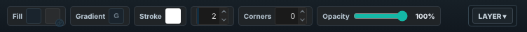
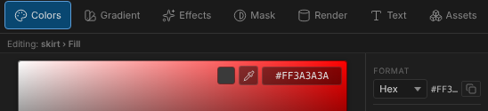
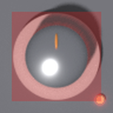
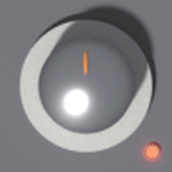
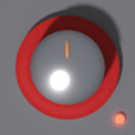
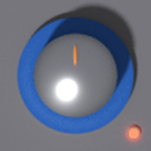
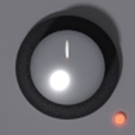
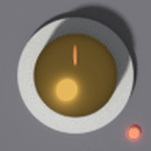
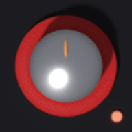
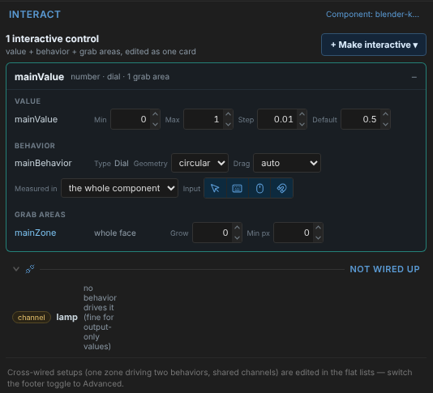

A picture layer's colour, and a value the panel sets
Two of the three defects the review of the Blender knob work found are interface changes. This page shows what the Component Designer does today, what it would do, and the questions to settle before anything is built.
Built, 2026-11-06, with the recommendation on every question approved. What changed while building, and the colour measured against Blender, is in docs/design/blender-knob-fixes-design.md, As built.
The page as it was proposed. Screenshots marked “today” are of the editor before the change, with the test knob (CE/web/test/fixtures/blender-knob.psd) imported. The knob pictures under “What it would look like” are real pixels: the test knob's layers, recoloured by the formula below and composited as CEditor composites them.
Defect 2 is fixed. The import notice counts the component's layers, not the file's. The test knob now reads “A dial of 19 layers”; its file holds 49.
Defect 1
Change the colour of a picture layer
The manual promises that a part's colour changes and its light stays as Blender rendered it. Today no control in the Component Designer does that.
Today

TodayThe skirt selected. The look bar offers Fill, Gradient, Stroke and Corners. A picture layer draws none of them.

TodayThe Colors dock reads Editing: skirt › Fill. A colour picked here goes to the fill, which a picture layer does not draw, so nothing on the canvas changes. A part of frames, such as the pointer, has no colour property at all.

TodayThe only colour a picture has is Fill.imageTint, set from a script: a red wash at 30 % over the layer's whole box, panel corners included. The designer shows no control for it.
What it would look like

As drawn skirt #C1C1BC

Skirt red #B22222

Skirt blue #285AAASkirt black #1C1C1E

Pointer white, a part of frames #F0F0E8, all 11 frames

Metal cap brass (question 2) #CDA046

Skirt red, dark panel panel #1C1C20
Real pixels
Only the colour layers changed. Every shading, highlight and shadow layer, and the light on the panel, is the file's own. At 96 px, the size of the test file, enlarged.
The designer, with the skirt selected
picture layerColour #B22222Opacity 100%LAYER ▾
ColorsGradientEffectsMaskRenderTextAssets
Editing: skirt › ColourCancelDone
Drawn#C1C1BC→Now#B22222Pick from the pictureBack to as drawnThe drawn colour becomes the new one; lighter and darker pixels keep their proportion to it. Its shading and highlights stay as rendered.
Format
Hex · #B22222
Set colours · the panel's set
Panel
Controls
Plate A
The look bar shows what a picture layer has: its Colour and its opacity. Selecting the layer opens the Colors dock on skirt › Colour, as it opens on Fill for a shape now. The new strip under the header shows the colour the picture was drawn in and the one it has now. Pick from the picture sets which drawn colour is the one to change (for a picture of more than one colour). A colour-set role works as it does for a fill: linked here to the set's Body, so a control set's palette recolours imported knobs. Outlined in teal: what is new.
Plate B · a light layer selected
light layerEdit skirt's colourOpacity 100%
Editing: nothing
skirt_shading is light: what Blender's lights do to the skirt, multiplied over it. It has no colour of its own to change. Edit skirt's colour
Shading, highlights, shadows, reflections and the light on the panel are light layers. Selecting one points to the layer it lights rather than offering a fill it does not draw.
Plate C · the Layers list says what each layer is (optional)
pointerFRAMES
cap_highlightsLIGHT
capPICTURE
skirt_shadingLIGHT
skirtPICTURE
bounceLIGHT
Today every row says RECT and the footer says “rectangle layer”. A picture, a part of frames and a light layer would each say so. Question 3.
How it works
new = drawn pixel + (new colour − drawn colour) × sharePer pixel and per channel, alpha untouched. The share is the pixel divided by the drawn colour unless the file says otherwise, so the drawn colour becomes the new one and every other pixel keeps its proportion to it.
One property for each picture.Background.Fill.imageColour on a picture layer and Image.colour on a part of frames: a colour or a colour-set role, empty for as drawn. Beside it the drawn colour, measured on import from the pixels the layer covers whole, and changed by Pick from the picture.
Exact at the edge too, for Blender parts. At a part's edge the add-on keeps its whole lit look in the colour layer (see the handoff). There the add-on would also write how much of the colour shows through the light (<name> colour share, a hidden layer CEditor reads and does not make a part of). With it the formula gives Blender's own result at the edge. Without it (older files, other pictures), the edge is scaled with the rest, its white glints tinted for a pixel or two.
Worked out on the picture once per colour, then the outline mixing on top, the way utils/linearEdges.js works now. The editor, the Player, exported plug-ins and the filmstrip baker all draw the recoloured picture. Nothing new is asked of CSS.
The Colors dock edits it, through the same colour target a fill uses: one layer, or several (“3 layers › Colour”).
What stays approximate
The light a part throws on the panel (bounce) keeps the drawn colour's tint. On the test knob that is a faint grey; under a saturated part it would show.
A picture of several colours changes as a whole, in proportion. To change one colour of several, keep it a layer of its own in Photoshop or Blender.
Questions
The old Tint. Keep imageTint as the 30 % wash it is for panel backgrounds and textures, and add the recolour beside it; or turn the tint itself into the recolour everywhere, which changes how existing panels look?Recommended: keep the wash, add the recolour. Existing panels stay as they are.
Metal. A metal's reflections carry its colour (a brass cap glints gold); a plastic's are white. Should a metal part's highlights change with its colour? The add-on knows which parts are metal and could mark them in the file.Recommended: yes, for the parts the add-on marks as metal. The brass render above leaves them white.
Layer tags. Show PICTURE, FRAMES and LIGHT in the Layers list (Plate C) now, or leave it for later?Recommended: now. It is small, and the light layers' “Edit skirt's colour” relies on the same knowledge.
Colour-set roles. Let a picture's colour follow a role of the control set (Plate A), as a fill can?Recommended: yes. It is what makes an imported knob part of a changeable control set. A later step could link them on import by name: a skirt or body to Body, a cap to Knob / fader cap, a pointer to Marker.
Defect 3
A value the panel sets is not a fault
An imported dial with a lamp has a second value, Lamp, on or off, that lights the lamp's layers. Nothing on the component drives it: the panel does, through a binding, a script or Value From. The Interact card lists it under Not wired up, the section for broken wiring.

TodayUnder Not wired up: “channel lamp · no behavior drives it (fine for output-only values)”, squeezed into a column a word wide. The wording reads as a fault and says “channel” and “behavior”, which the rest of the card no longer does.
Option A · recommended · a section of its own
mainValuenumber · dial · 1 grab area+
Set by the panel · no grab area moves these
On/OffLamplampLights lamp_lit, lamp_glow and lamp_glow_shine. Starts on.Value Fromits own: a binding or a script sets itOffOn
A value goes here when nothing on the component moves it and something uses it: a binding or a state reads it, or it follows a control (Value From, the picker the flat list already has). The On/Off shows how it starts. Not wired up is then hidden for this knob, as nothing is broken.
Option B · smaller · reworded in place
mainValuenumber · dial · 1 grab area+
Values without a grab area
valueLampSet by the panel. Lights lamp_lit, lamp_glow and lamp_glow_shine.
The list stays where it is with a neutral title, each row's text on the full width. Smaller, but a real fault (below) would then sit in the same list as a value that is fine.
What stays under Not wired up
Not wired up
behaviourspinIts value is missing.
grab areatopZoneMoves nothing: its behaviour and value are missing.
valuespareNothing sets it and nothing uses it.
Option A
Examples, not the test knob. The section keeps the faults, with the text on the full width. A value with nothing setting it and nothing using it is still listed, because it is probably left over.
Question
Option A or B, and the section's name: “Set by the panel”, or something else? Value From inline in Simple mode, or only in Advanced as now?Recommended: Option A, “Set by the panel”, Value From inline. Imported dials with lamps are where most authors will meet this.